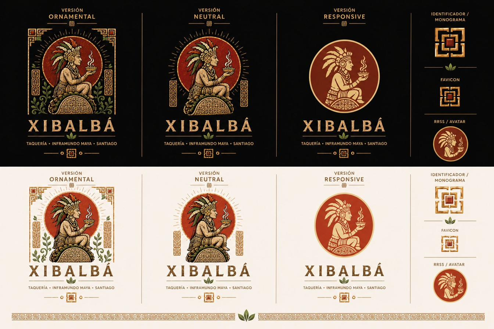
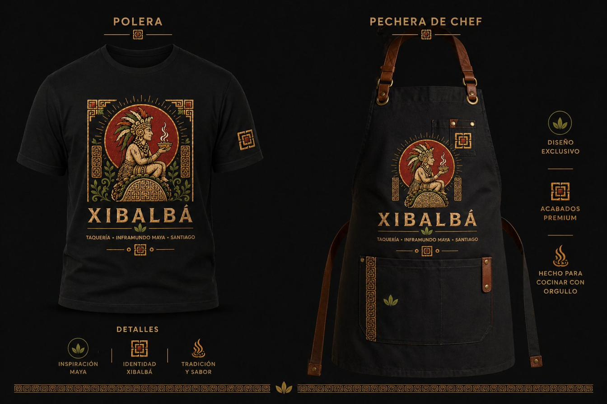
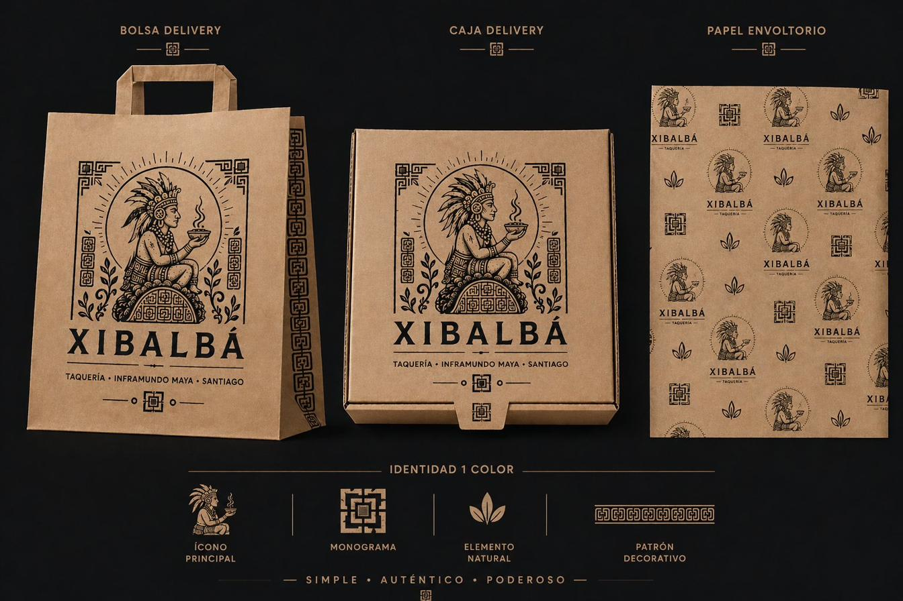
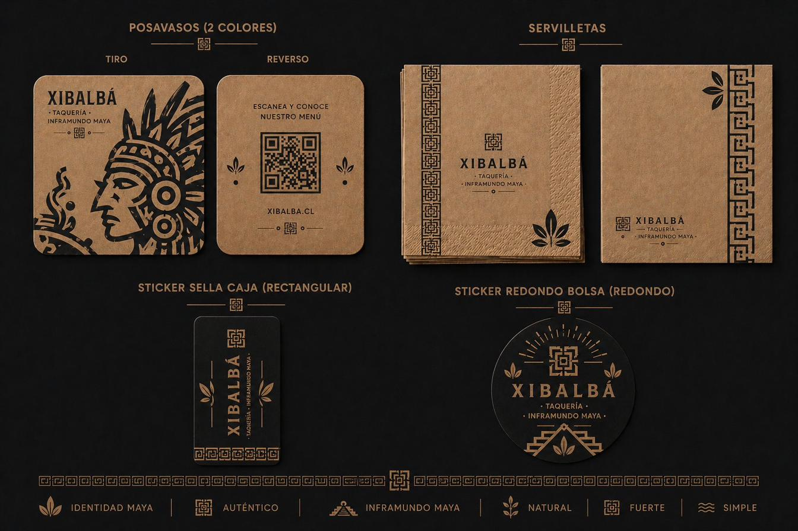
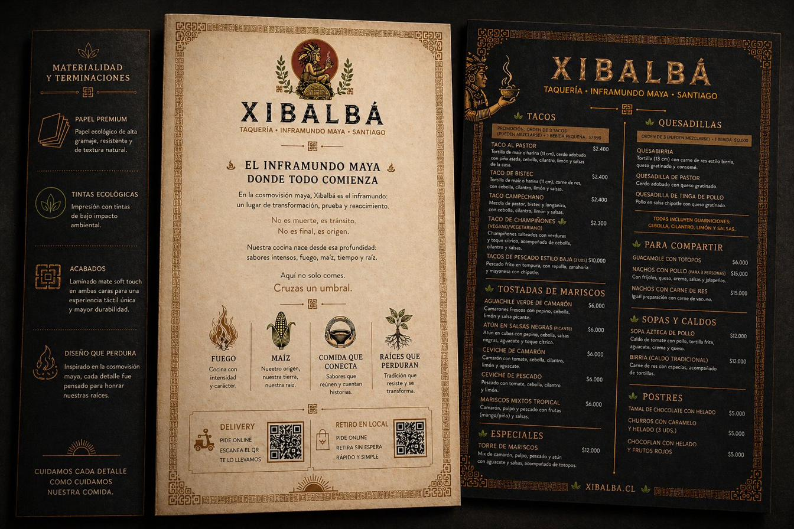

Xibalbá representa el inframundo maya: un espacio de transformación, tránsito y origen. Una taquería que convierte la comida en una experiencia ritual, sensorial y cultural — donde lo ancestral no decora, sino que estructura cada decisión.
La figura ritual sosteniendo el cuenco humeante es la voz central de la marca. Acompaña al espectador desde el portal hasta el último detalle del posavasos.

Versión ornamental · neutral · responsive · monograma · favicon · avatar RRSS
Una paleta que evoca el ritual maya: el negro del inframundo, el dorado del valor sagrado, el rojo del fuego y la pasión, y el kraft del origen orgánico.
Polera y pechera de chef construyen pertenencia en el equipo y transmiten la esencia ritual al cliente desde el primer contacto.

Bolsa, caja y papel envoltorio en kraft con tinta única: el cliente recibe un objeto, no un envase. Materialidad > decoración.

Posavasos en dos colores, servilletas con grecas mayas, stickers que sellan la caja: cada elemento construye experiencia en la mesa y en el delivery.

Carta sobre papel premium con doble cara: portada en kraft cálido con la historia, reverso en negro profundo con los platos. Tinta dorada y mate soft touch.

Xibalbá no es solo una marca visual.
Es un sistema coherente que transforma comida en experiencia.